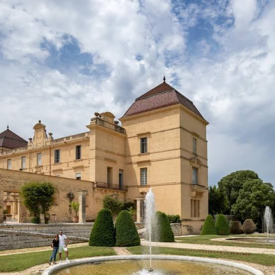
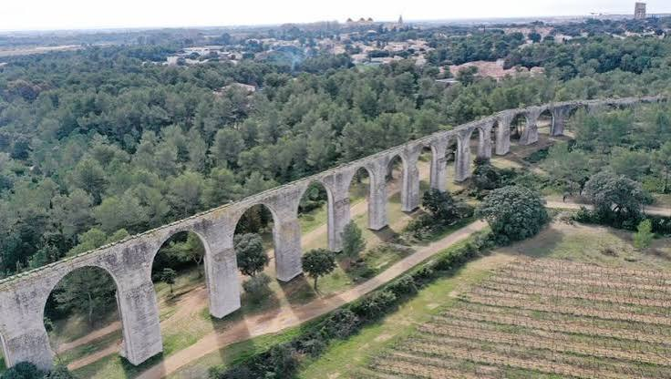

Château de
Castries


⟹ Monuments & Châteaux ⟸
Des origines médiévales à la Renaissance. Le site de Castries est occupé par une résidence seigneuriale dès le Moyen Âge. Un manoir fortifié, généralement rattaché au XIVe siècle, précède le château actuel. En 1565, Jacques de La Croix de Castries entreprend une reconstruction qui donne au domaine son caractère Renaissance : l'ancienne demeure défensive se transforme progressivement en résidence aristocratique, tout en conservant la position dominante du château au-dessus du village.

L'ascension de la maison de La Croix de Castries. Aux XVIe et XVIIe siècles, la destinée du château accompagne l'élévation d'une famille languedocienne qui se rapproche du pouvoir royal. Sous Louis XIV, René Gaspard de La Croix de Castries voit la terre familiale érigée en marquisat. Le château cesse alors d'être seulement une demeure seigneuriale provinciale : il devient le cadre monumental d'une lignée appelée à fournir militaires, prélats, diplomates et serviteurs de la monarchie.
La grande transformation du XVIIe siècle. Le marquis fait agrandir et embellir la demeure, notamment par l'aménagement du grand escalier et de la grande salle. Dans le même temps, le domaine est organisé selon le goût classique. La tradition attribue la conception du jardin à André Le Nôtre, dont l'influence impose une composition régulière, structurée par des axes, des terrasses, des perspectives et des jeux d'eau. Le château et son parc forment dès lors un ensemble où architecture, paysage et maîtrise de l'eau sont indissociables.
L'aqueduc de Pierre-Paul Riquet. L'ambition du jardin se heurte à une difficulté majeure : Castries manque d'eau. Pour conduire jusqu'au domaine les eaux de la source de Fontgrand, située à plusieurs kilomètres, un aqueduc est réalisé vers 1670 sous la direction de Pierre-Paul Riquet, célèbre constructeur du canal du Midi. Long d'environ 6,8 km, l'ouvrage franchit le relief par une succession de parties souterraines, de tranchées et d'arcades, avec une pente totale extrêmement faible. Cette prouesse hydraulique est l'un des éléments les plus remarquables du patrimoine castriote.

Un domaine remodelé au fil des siècles. Comme beaucoup de grandes demeures aristocratiques, Castries connaît des transformations successives. Les bâtiments, les dépendances et les jardins sont adaptés aux usages de chaque époque. Le parc visible aujourd'hui ne constitue donc pas un décor figé du XVIIe siècle : il porte les traces de plusieurs campagnes d'aménagement, notamment d'une recomposition du jardin régulier au XXe siècle selon les modèles classiques.
Révolution, dispersion et retour de la famille. La Révolution française bouleverse l'histoire du domaine. Le château est pillé et les biens sont saisis puis vendus comme biens nationaux. La propriété revient cependant par la suite dans la famille de La Croix de Castries. Cette continuité, malgré les ruptures politiques et patrimoniales, contribue à la conservation d'un ensemble exceptionnel associant demeure, parc, dépendances et système hydraulique.
Le dernier duc de Castries et l'Académie française. Historien et académicien, René de La Croix de Castries, dernier représentant de la famille à posséder le domaine, marque profondément son histoire contemporaine. À sa mort en 1986, le château revient à l'Académie française, conformément aux dispositions prises par le duc. L'institution conserve le domaine pendant plusieurs décennies avant de le céder à la commune de Castries en 2013.
Un patrimoine protégé. La reconnaissance patrimoniale s'est faite par étapes au XXe siècle. Château et parc sont protégés dès les années 1940, puis certaines parties sont classées en 1966. En 2004, la protection est étendue à l'ensemble du domaine : château, parc, jardin et bâtiments annexes sont classés au titre des Monuments historiques. L'aqueduc bénéficie lui aussi d'une protection spécifique.
Le château au XXIe siècle. Depuis l'acquisition municipale de 2013, Castries mène d'importantes campagnes de sauvegarde et de restauration. L'enjeu est considérable : préserver à la fois l'architecture du château, ses décors, les dépendances, le parc historique et l'exceptionnel réseau hydraulique. Le domaine de Castries apparaît ainsi comme le résultat de plus de six siècles d'histoire, depuis la forteresse médiévale jusqu'au grand domaine classique façonné par l'aristocratie languedocienne.
Un chantier hors norme : construit à partir de 1670, l'aqueduc de Castries s'étend sur 6 822 mètres pour un dénivelé de seulement 3 mètres — le plus important ouvrage hydraulique jamais réalisé en France pour un particulier.
Une eau captée à distance : l'ouvrage capte la source de Fontgrand, traverse le village de Castries — où une borne-fontaine reste visible sur la place du marché — avant de rejoindre le château d'eau qui surplombe le bourg.
Une signature de génie : Pierre-Paul Riquet, tout juste auréolé de son Canal du Midi, met ici son savoir-faire au service d'un jardin d'agrément plutôt que d'une voie navigable, ce qui rend l'aqueduc de Castries unique en son genre.
Randonner sur ses traces : un sentier balisé permet de suivre le tracé de l'aqueduc à pied, entre passages souterrains et arcades aériennes, jusqu'aux spectaculaires « Grands Arcs ».
Adresse Château de Castries, avenue de la Gare, 34160 Castries.
Château propriété de la commune de Castries depuis 2013, actuellement fermé pour restauration intérieure ; réouverture au public annoncée pour septembre 2026.
Parc et aqueduc accessibles toute l'année, entrées piétonnes par l'avenue de la Gare et l'avenue de Sommières.
Accès à environ 20 km au nord-est de Montpellier ; parking gratuit à l'Espace Gare.